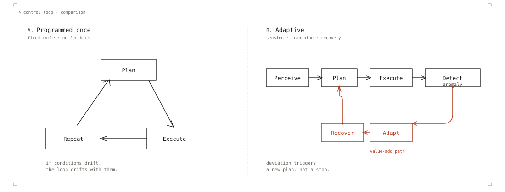
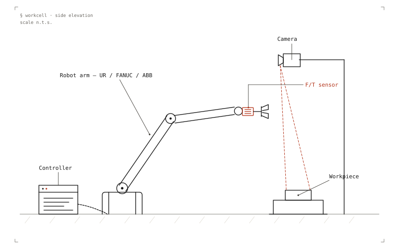
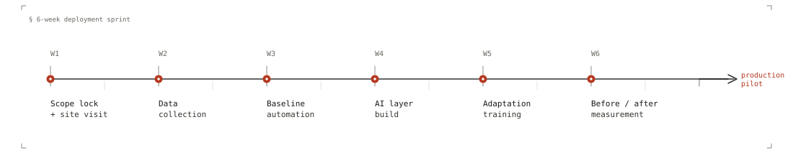

Robotics that adapts to your line.
Asperity Industries is an AI-native robotics deployment company. We help small and medium manufacturers automate one painful task in 6 weeks — leased robot hardware, in-house AI and perception software, measured before/after performance. Mechanical, PLC, and safety work delegated to regional integration partners so we stay in the AI/software lane.
hello@asperity.ai →§ 01 · The work
The work
Most robots in SMB manufacturing are programmed once and run one product. They handle pose variation badly, choke on part-family changes, and lose hours on changeover. The hardware is fine — what's missing is a software layer that lets a workcell adapt.

Asperity builds that layer. We use existing robot arms (Universal Robots, FANUC, ABB), pair them with cameras, force/torque, and tactile sensing where it matters, and run perception, anomaly detection, task adaptation, and recovery on top. The result is a cell that handles variation instead of breaking on it.

Operators will tell you the truth about what's breaking.
Year-1 focus: East Texas fabrication shops within driving distance of Tyler, and specialty electronics contract manufacturers nationally. Two reasons. The work in these places is high-mix and existing automation handles it badly.
§ 02 · The Sprint
The AI Robotics Feasibility Sprint
6 weeks · $25K–$80K
Most automation feasibility studies are slide decks. The Sprint is a working cell.
We bring or configure a leased robot at your facility (or at our lab with your parts), instrument it for data collection, build a baseline automation, then add the AI layer that handles the variation your operators see every day.

Measured before/after numbers and a production-pilot proposal grounded in what we observed — not vendor optimism.
What you get
- A working robotic cell on one of your real tasks
- Cycle time, quality, and failure-mode measurements (before vs. after)
- A production-pilot proposal with calibrated numbers
- The data we collect, in a format you own
What's out of scope
Mechanical fixturing, end-of-arm tooling fabrication, PLC integration, safety engineering. Those are delegated to regional integration partners. We stay in the AI/software lane.
Design-partner pricing
First five customers get a discount in exchange for data-sharing rights and a case-study agreement.
§ 03 · Founder
Founder
Satwant Kumar — founder.
Physician-scientist (MBBS, PhD systems neuroscience), with prior research in machine perception and clinical AI published in top journals. Previously founded Neuroreef Labs, an Antler-backed healthcare AI startup, where he scaled the company from zero and shipped CareCortex — a state-of-the-art clinical operations platform for healthcare providers.
The software backbone of Asperity is the same work — learning systems that handle complex, noisy, real-world signals — retargeted from cortex and clinics to factories. The physical-hardware deployment side is newer, and he's open about that.
Asperity is based in Tyler because the work is here — East Texas fabrication, local operators, real shops within driving distance. The variation problems a Tyler welding shop faces are the same problems facing manufacturers worldwide; starting at the source is how the AI stays honest.
Volunteer Chief Scientific Officer at the Alzheimer's Alliance of Smith County, contributing to community dementia research as an interdisciplinary scientist.
Reach him: satwant@asperity.ai · linkedin.com/in/satwantkumar
§ 04 · Reach us
Reach us
If you run a shop or a line and you've got a task that's eating hours, write. We respond.
Tyler, TX